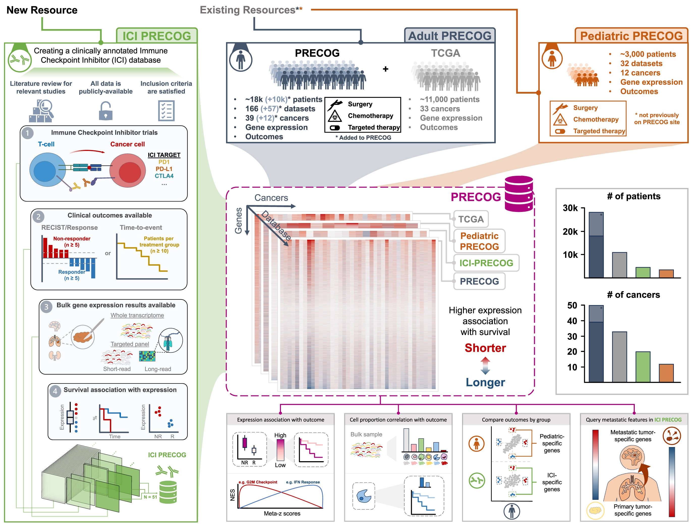
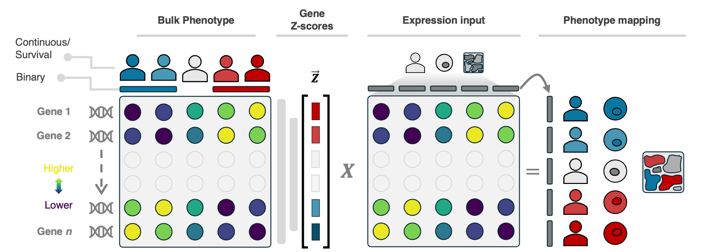
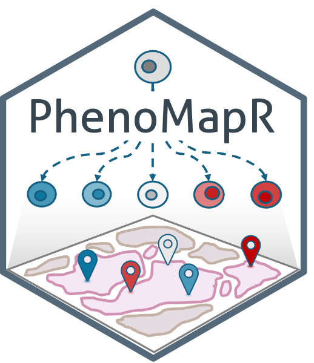
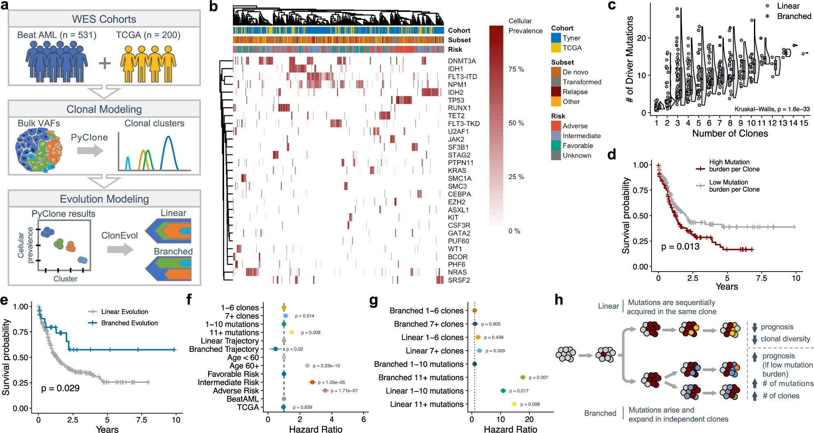
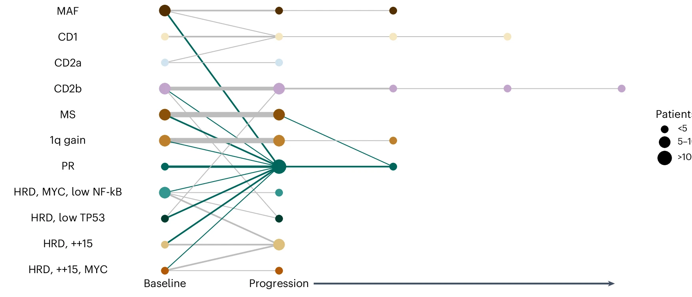
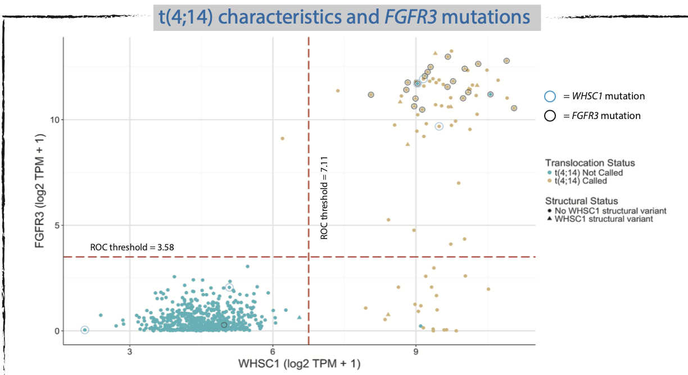

Research Overview
I develop and apply statistical learning methods that turn atlas-scale gene expression—across bulk, single-cell, and spatial modalities—into experimentally actionable insights for therapeutic target identification in cancer.
Current
-

Database curation: I augmented PRECOG, a large database of bulk gene expression associations with outcomes for adult, pediatric, and immunotherapy cohorts across cancers. PRECOG lets researchers examine whether higher expression of a gene and immune cell abundance are prognostic for shorter or longer patient survival. PRECOG represents the largest curation, annotation, pre-processing, and survival outcomes signature generation across cancers to-date: 335 datasets, >46,000 patients, and 55 cancer subtypes.
-
Method development: I developed PhenoMapR, a semi-supervised method that maps sample-level phenotype signals (from resources such as PRECOG) onto single-cell and spatial data. This approach helps identify high-resolution cell states and spatial determinants of biological relevance and therapeutic intervention.


GitHub Loading stats…
PhD
My doctoral work focused on understanding how clonal architecture in AML is associated with prognostic risk and drug response. I aggregated clinically-annotated and molecularly profiled datasets in AML to generate the largest (at its time) resource. Using this dataset, I modeled how mutation co-occurrence patterns, individual/pairwise gene variant allele frequencies, and order of mutation acquisition associated with clinical outcomes. I further modeled how clonal abundance of mutations identify distinct drug sensitivity patterns in ex vivo screening data from primary AML patient samples.

Undergraduate
-
Keats Lab: The Keats Lab was responsible for all data aggregation, processing, and analysis for the largest genomic sequencing study of multiple myeloma to-date (MMRF CoMMpass Study). I helped develop the analytical pipelines to associate molecular measurements (e.g. mutation, copy-number, and expression) with clinical outcomes associations. Part of this work showed that FGFR3 mutations are an independent prognostic factor in Multiple Myeloma. An additional vignette showed that KP-6 is a novel hyperdiploid cell line.


-
Haydel Lab: I used site-directed mutagenesis and electrophoretic mobility shift assays (EMSA) to measure the effects of mutations in the binding domain of the PrrAB two-component system to regulatory DNA elements in Mycobacterium tuberculosis. This work helped lay the groundwork for Haller et al., ACS Infect. Dis..